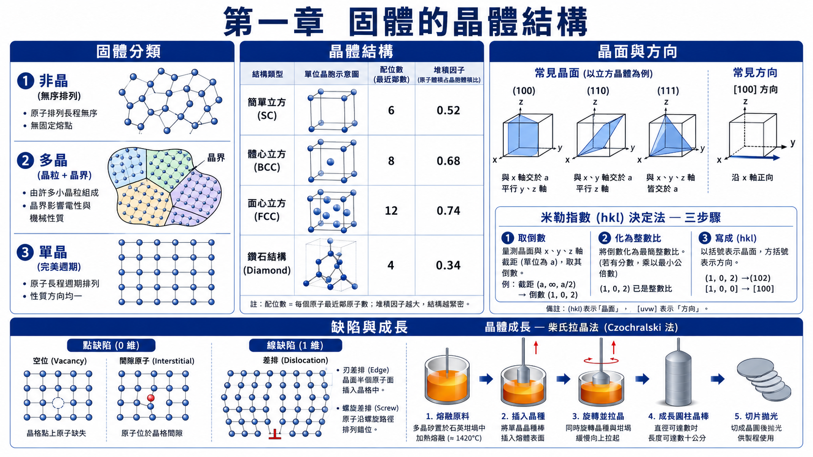
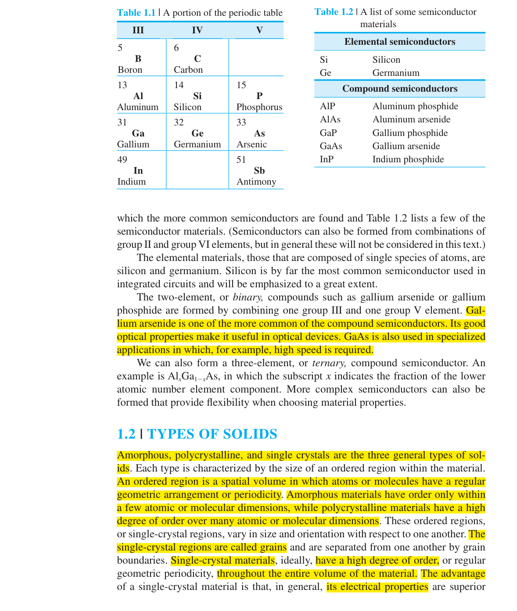
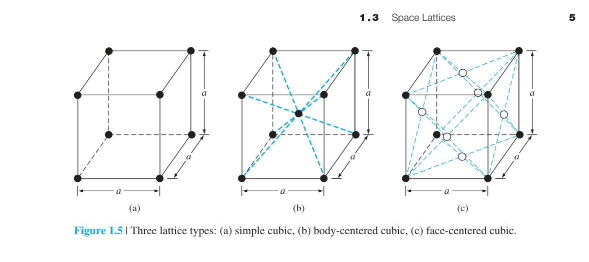
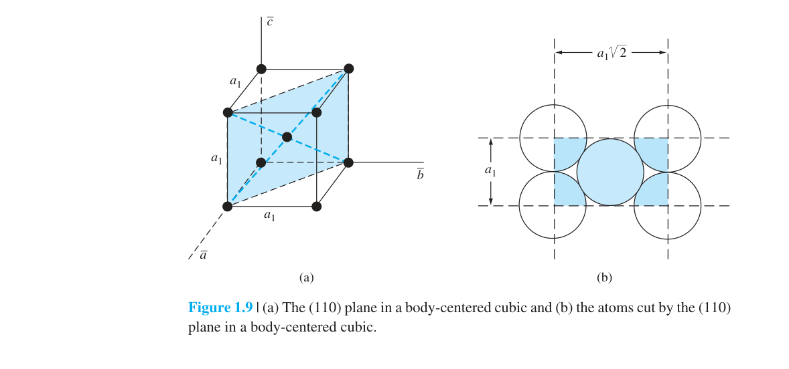
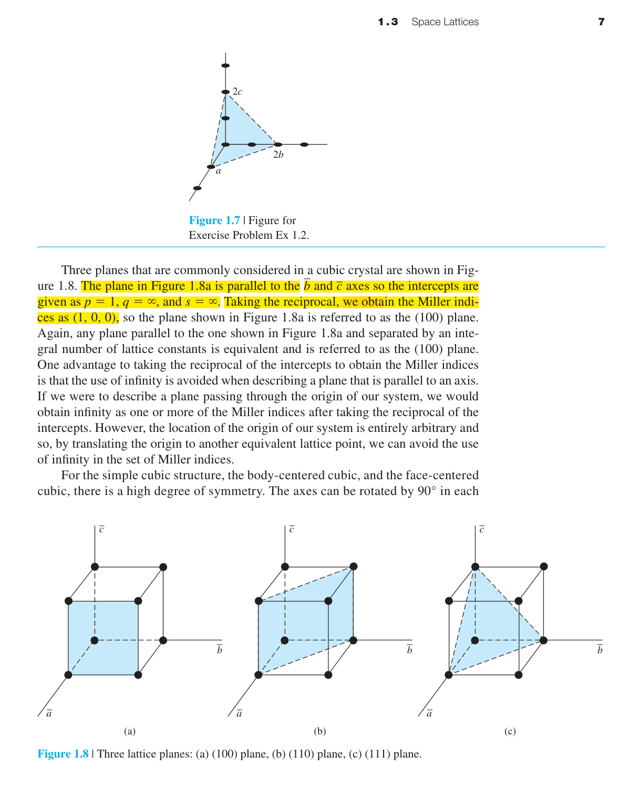
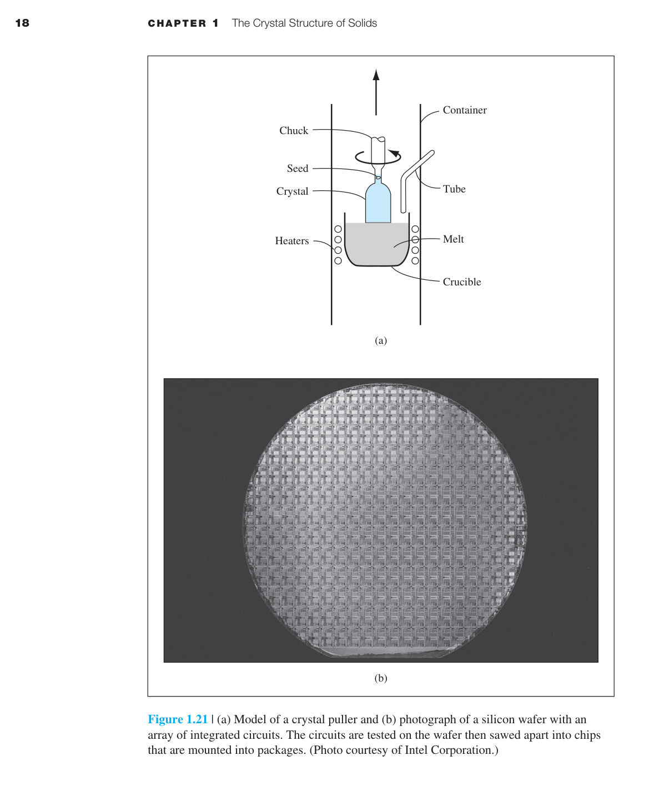

<!DOCTYPE html>
<html lang="zh-TW" data-theme="light">
<head>
<meta charset="UTF-8"><meta name="viewport" content="width=device-width,initial-scale=1.0">
<title>第一章：固體的晶體結構 — 半導體物理與元件</title>
<script>MathJax={tex:{inlineMath:[['$','$']],displayMath:[['$$','$$']],tags:'ams'},options:{ignoreHtmlClass:'no-math'}};</script>
<script async src="https://cdn.jsdelivr.net/npm/mathjax@3/es5/tex-mml-chtml.js"></script>
<style>
:root{--bg:#fff;--b2:#F5F5F7;--b3:#E8F0FE;--tx:#1D1D1F;--t2:#1D1D1F;--ac:#007AFF;--bd:#D2D2D7;--sh:0 2px 8px rgba(0,0,0,.08);--fbd:#E5E5EA;--wbg:#FFF9F0;--wbd:#FFB340;--wtx:#B8700A;--nw:260px}
[data-theme="dark"]{--bg:#1C1C1E;--b2:#2C2C2E;--b3:#1A2332;--tx:#F5F5F7;--t2:#A1A1A6;--ac:#0A84FF;--bd:#48484A;--fbd:#3A3A3C;--wbg:#2C2416;--wbd:#8B6914;--wtx:#FFB340}
*{box-sizing:border-box;margin:0;padding:0}html{scroll-behavior:smooth;scroll-padding-top:16px}
body{font-family:-apple-system,BlinkMacSystemFont,'Noto Sans TC','Microsoft JhengHei',sans-serif;background:var(--b2);color:var(--tx);line-height:1.9;display:flex;min-height:100vh}
.sidebar{position:fixed;top:0;left:0;width:var(--nw);height:100vh;background:var(--bg);border-right:1px solid var(--bd);overflow-y:auto;z-index:100;padding:20px 16px;display:flex;flex-direction:column}
.sh{margin-bottom:16px;padding-bottom:12px;border-bottom:1px solid var(--fbd)}.sh h2{font-size:14px;font-weight:600;color:var(--ac)}.sh .bk{font-size:11px;color:var(--t2)}
.sn{flex:1}.sn ul{list-style:none}.sn a{display:block;padding:4px 10px;font-size:11px;color:var(--t2);text-decoration:none;border-radius:5px;transition:.12s}.sn a:hover{background:var(--b3);color:var(--ac)}.sn a.active{background:var(--b3);color:var(--ac);font-weight:500}.sn .ns{font-weight:600;font-size:12px;color:var(--tx);margin-top:10px;padding:2px 10px}.sn .nsub a{padding-left:20px;font-size:10px}
.st{margin-top:auto;padding-top:12px;border-top:1px solid var(--fbd)}.st button{width:100%;padding:6px;border:1px solid var(--bd);border-radius:6px;background:var(--b2);color:var(--tx);cursor:pointer;font-size:12px}
.main{margin-left:var(--nw);flex:1;max-width:1050px;padding:32px 40px 80px}
.header{margin-bottom:32px;padding-bottom:20px;border-bottom:2px solid var(--ac)}.header .cl{font-size:12px;font-weight:600;color:var(--ac);letter-spacing:1px}.header h1{font-size:28px;font-weight:700;margin:6px 0}.header .meta{font-size:13px;color:var(--t2)}
section{margin-bottom:44px}h2{font-size:20px;font-weight:700;color:var(--ac);margin-bottom:14px;padding-bottom:6px;border-bottom:1px solid var(--bd)}h3{font-size:16px;font-weight:600;color:var(--tx);margin:24px 0 10px}h4{font-size:14px;font-weight:600;color:var(--t2);margin:18px 0 6px}
p{font-size:14px;color:var(--t2);margin-bottom:12px}strong{font-weight:600;color:var(--tx)}
.eq{text-align:center;margin:16px 0;font-size:15px}
.figure{margin:24px 0;text-align:center}.figure img{max-width:100%;border-radius:8px;box-shadow:var(--sh);cursor:pointer}.figure img:hover{transform:scale(1.01)}.figure figcaption{margin-top:8px;font-size:12px;color:var(--t2)}
.exbox{background:var(--wbg);border-left:3px solid var(--wbd);border-radius:0 8px 8px 0;padding:14px 18px;margin:16px 0;font-size:13px}.exbox .ext{font-weight:700;color:var(--wtx);font-size:11px;margin-bottom:4px}
.callout{background:var(--b3);border:1px solid var(--fbd);border-radius:8px;padding:14px 18px;margin:16px 0;font-size:13px}.callout strong{color:var(--ac)}
.callout-warn{background:var(--wbg);border:1px solid var(--wbd);border-radius:8px;padding:14px 18px;margin:16px 0;font-size:13px}.callout-warn strong{color:var(--wtx)}
table{width:100%;border-collapse:collapse;margin:14px 0;font-size:13px}thead th{background:var(--b3);padding:8px 12px;font-size:12px;font-weight:600;border-bottom:2px solid var(--bd)}tbody td{padding:8px 12px;border-bottom:1px solid var(--fbd)}tbody tr:nth-child(even){background:var(--b2)}
.sidebar-toggle-btn{display:none;position:fixed;top:12px;left:12px;z-index:200;width:40px;height:40px;border:1px solid var(--bd);border-radius:8px;background:var(--bg);color:var(--tx);font-size:22px;cursor:pointer;box-shadow:0 2px 8px rgba(0,0,0,.1)}@media(max-width:768px){.sidebar-toggle-btn{display:flex;align-items:center;justify-content:center}.sidebar{transform:translateX(-100%);transition:transform .3s}.sidebar.open{transform:translateX(0)}.main{margin-left:0;padding:20px 16px 60px}}
@media print{.sidebar{display:none}.main{margin-left:0;max-width:100%;padding:0}}
</style>
<style id="derivation-lab-style">.derivation-lab{border-top:3px solid var(--ac);padding-top:20px}.derivation-lab ul,.derivation-lab ol{font-size:14px;color:var(--t2);margin:8px 0 14px 22px}.derivation-lab details{border:1px solid var(--bd);border-radius:8px;margin:8px 0;background:var(--bg)}.derivation-lab summary{cursor:pointer;padding:10px 13px;font-weight:600}.derivation-lab details p{padding:0 13px 10px}.dimcheck{background:var(--b3);border-left:3px solid var(--ac);padding:12px 15px;border-radius:0 8px 8px 0}</style><link rel="stylesheet" href="../assets/course-ui.css">
<script defer src="../assets/course-ui.js"></script>

<script src="../../../reading-preferences.js" defer></script>
</head>
<body>
<a class="portal-home-link" href="../../../index.html">返回學習中心</a>
<style id="portal-home-link-style">.portal-home-link{position:fixed;top:16px;right:16px;z-index:1000;display:inline-flex;align-items:center;min-height:36px;padding:7px 11px;border:1px solid #cbd5e1;border-radius:8px;background:#fff;color:#1d4ed8;font:600 13px/1.2 -apple-system,BlinkMacSystemFont,"Noto Sans TC","Microsoft JhengHei",sans-serif;text-decoration:none;box-shadow:0 2px 10px rgba(15,23,42,.08)}.portal-home-link:hover{background:#eff6ff}.portal-home-link:focus-visible{outline:3px solid rgba(37,99,235,.35);outline-offset:2px}@media(max-width:768px){.portal-home-link{top:10px;right:10px;min-height:34px;padding:7px 9px;font-size:12px}}</style>
<nav class="sidebar"><div class="sh"><div class="bk">半導體物理與元件·第四版</div><h2>第一章</h2></div><div class="sn"><ul>
<li><a href="#preview">📋 1.0 本章預覽</a></li>
<li class="ns">1.1–1.2 材料與分類</li><li class="nsub"><a href="#s1-1">1.1 半導體材料</a></li><li class="nsub"><a href="#s1-2">1.2 固體的三種分類</a></li>
<li class="ns">1.3 空間晶格</li><li class="nsub"><a href="#s1-3-1">1.3.1 原始晶胞與單位晶胞</a></li><li class="nsub"><a href="#s1-3-2">1.3.2 基本晶體結構</a></li><li class="nsub"><a href="#s1-3-3">1.3.3 晶面與米勒指數</a></li><li class="nsub"><a href="#s1-3-4">1.3.4 晶體中的方向</a></li>
<li class="ns">1.4–1.5 結構與鍵結</li><li class="nsub"><a href="#s1-4">1.4 鑽石結構</a></li><li class="nsub"><a href="#s1-5">1.5 原子鍵結</a></li>
<li class="ns">1.6–1.7 缺陷與成長</li><li class="nsub"><a href="#s1-6">1.6 缺陷與雜質</a></li><li class="nsub"><a href="#s1-7">1.7 晶體成長</a></li>
<li><a href="#summary">📋 本章摘要</a></li><li><a href="#derivation-lab">🧪 推導、假設與章末診斷</a></li>
</ul></div><div class="st"><button onclick="toggleTheme()">🌓 <span id="tl">深色模式</span></button></div></nav>
<main class="main">
<header class="header"><div class="cl">第一章</div><h1>固體的晶體結構</h1><div class="meta">Donald A. Neamen·《半導體物理與元件：基本原理》第四版·第 1–24 頁</div></header>

<section id="preview"><div class="callout"><strong>📋 1.0 本章預覽</strong>
<p>本書旨在探討半導體材料與元件的電特性。半導體通常為<strong>單晶材料</strong>——整個晶片上的數十億個電晶體都製造在同一塊近乎完美的矽單晶上。單晶材料的電特性不僅取決於化學組成（是 Si 還是 GaAs），更取決於<strong>原子在三維空間中的排列方式</strong>。</p>
<div class="callout-warn"><strong>⚡ 為什麼第一章是整個半導體物理的基礎？</strong>晶體結構直接決定了能帶結構（第三章）→能帶結構決定了載子傳輸（第五章）→載子傳輸決定了元件性能。此外，晶圓的晶體取向（(100)還是(111)面）決定了蝕刻速率、氧化層品質、以及磊晶生長的品質——這些都是實際半導體製造中的關鍵參數。本章的每一個概念在後續章節都會反覆出現。</div>
<p><strong>在本章中，我們將學習：</strong></p>
<ul style="font-size:14px;color:var(--t2);margin-left:18px">
<li>固體的三種分類——非晶、多晶與單晶</li><li>單位晶胞與原始晶胞的概念</li>
<li>三種簡單晶體結構（sc, bcc, fcc）的原子密度計算</li>
<li>單晶半導體材料的生長方法（柴氏法、磊晶）</li>
</ul>
<div style="margin-top:14px;background:var(--bg);border:1px solid var(--fbd);border-radius:8px;padding:12px 16px">
<div style="font-size:11px;font-weight:600;color:var(--ac);margin-bottom:6px">🔑 本章核心概念</div>
<div style="font-size:12px;color:var(--tx);line-height:2">
1. 晶體 = 空間晶格（數學抽象）+ 基底原子（實體）<br>
2. 三種立方晶格：簡單立方 SC、體心立方 BCC、面心立方 FCC<br>
3. Miller 指數 $(hkl)$：截距的倒數——晶面方向由三個整數唯一決定<br>
4. 鑽石結構 = 兩個 FCC 子晶格沿體對角線偏移 (¼,¼,¼)——Si/Ge 的結構<br>
5. 原子堆積因子：FCC 0.74（最密堆積）、BCC 0.68、SC 0.52<br>
6. 共價鍵：Si 的四個 sp³ 混成軌域指向正四面體頂點<br>
7. (100) 面是主流矽晶圓——蝕刻速率與氧化品質最佳<br>
8. 晶體缺陷：點缺陷（空位、間隙、雜質）、線缺陷（差排）、面缺陷（晶界）<br>
9. 雜質：施體（P, As→n 型）、受體（B→p 型）——第四章摻雜的基礎<br>
10. Czochralski 法（熔體拉晶）和磊晶生長（CVD/MBE）——兩種主流晶體製備技術<br>
</div>
</div></div></section>

<div class="figure" style="margin-top:8px"><figcaption>📌 第一章總覽圖：固體的晶體結構 — 固體分類、晶體結構、晶面與方向、缺陷與晶體成長</figcaption></div>

<section id="s1-1">
<p>半導體是一類導電率介於金屬與絕緣體之間的材料。但它們真正的特別之處不在於導電率的大小，而在於導電率<strong>可以被精確控制</strong>——透過摻雜（第四章）可以將導電率調整超過十個數量級。這是金屬和絕緣體做不到的。</p>
<p>半導體分為兩大類：</p>
<table><thead><tr><th>類別</th><th>代表材料</th><th>特點</th></tr></thead><tbody>
<tr><td><strong>元素半導體</strong>（第 IV 族）</td><td>Si（矽）、Ge（鍺）</td><td>單一元素，Si 是主流（佔全球半導體市場 >95%）</td></tr>
<tr><td><strong>化合物半導體</strong>（III–V 族）</td><td>GaAs、GaN、InP</td><td>直接能隙→適合光電；高電子遷移率→適合高頻</td></tr></tbody></table>
<div class="figure"><figcaption>表 1.1：週期表中半導體元素的位置。表 1.2：常見半導體材料列表。</figcaption></div>
<div class="callout"><strong>💡 為什麼 Si 稱霸半導體產業？</strong>不只是因為便宜。Si 有天然的絕緣體 SiO₂——只要把 Si 加熱就能在表面長出完美的氧化層。這層 SiO₂ 是 MOSFET 閘極的基礎。其他半導體（如 GaAs）沒有這麼理想的自然氧化物，這是 Si 無可取代的優勢。</div>
</section>

<section id="s1-2"><h2>1.2 固體的三種分類</h2>
<div style="margin-bottom:14px;font-size:12px;color:var(--t2);line-height:1.8">
<strong style="color:var(--tx)">🔑 本節重點</strong> ① 非晶：無長程有序→遷移率極低（~0.1–1 cm²/V·s）→用於 TFT、薄膜太陽能 ② 多晶：晶粒+晶界→晶界散射降低遷移率（~10–100 cm²/V·s） ③ 單晶：完美週期排列→最高遷移率（~1350 cm²/V·s）→所有高效能 IC 必須使用單晶 ④ 晶界引入陷阱能態→捕捉載子→增加漏電流、降低元件速度
</div>
<h3>非晶（Amorphous）</h3>
<p>原子排列沒有長程有序——就像一袋隨機堆放的彈珠。非晶矽（a-Si）用於薄膜太陽能電池和 LCD 顯示器的薄膜電晶體，因為它可以在大面積玻璃基板上低溫沉積，不需要單晶的高溫製程。代價是載子遷移率遠低於單晶矽。</p>
<h3>多晶（Polycrystalline）</h3>
<p>由許多小單晶區域（<strong>晶粒</strong>）組成，晶粒之間由<strong>晶界</strong>分隔。晶界處原子排列紊亂→載子散射→遷移率降低。多晶矽用於太陽能電池和某些閘極材料，成本比單晶低但性能也較差。</p>
<h3>單晶（Single Crystal）</h3>
<p>整個材料中原子呈完美的週期排列——沒有晶界，沒有缺陷（理想上）。<strong>所有高效能半導體元件都必須使用單晶</strong>。為什麼？因為晶界會引入額外的能態（陷阱），捕捉載子、增加漏電流、降低元件速度。你能想像一個有數十億個電晶體的處理器，如果每個電晶體的性能都因晶界而不同，會有多混亂嗎？</p>
<div class="figure"><figcaption>圖 1.1：非晶、多晶與單晶材料的二維示意圖。注意單晶的完美週期排列。</figcaption></div>
<div class="callout"><strong>💡 三種分類的量化比較：</strong></div>
<table><thead><tr><th>性質</th><th>非晶</th><th>多晶</th><th>單晶</th></tr></thead><tbody>
<tr><td>遷移率（Si, cm²/V·s）</td><td>∼0.1–1</td><td>∼10–100</td><td>∼1350（電子）</td></tr>
<tr><td>有序範圍</td><td>< 1 nm</td><td>晶粒 10 nm–µm</td><td>整個晶片</td></tr>
<tr><td>製備溫度</td><td>200–400°C</td><td>500–800°C</td><td>>1000°C</td></tr>
<tr><td>典型應用</td><td>TFT、薄膜太陽能</td><td>太陽能電池、閘極</td><td>IC、功率元件</td></tr></tbody></table>
</section>

<section id="s1-3-1"><h2>1.3.1 原始晶胞與單位晶胞</h2>
<div style="margin-bottom:14px;font-size:12px;color:var(--t2);line-height:1.8">
<strong style="color:var(--tx)">🔑 本節重點</strong> ① 晶格向量 $\vec{r}=p\vec{a}+q\vec{b}+s\vec{c}$——$p,q,s$ 為整數，$\vec{a},\vec{b},\vec{c}$ 為基本平移向量 ② 單位晶胞：重複平移可填滿整個晶體的最小結構單元 ③ 原始晶胞：體積最小的單位晶胞；為方便計算常使用非原始晶胞 ④ 晶格常數 = $|\vec{a}|,|\vec{b}|,|\vec{c}|$——晶體最基本的幾何參數
</div>
<p>要描述一個含有 $10^{22}$ 個原子的晶體，不必逐一列出每個原子的位置。只需要找出<strong>最小的重複單元</strong>——這就是<strong>單位晶胞（unit cell）</strong>的概念。把這個單元在三個方向上無限複製，就得到整個晶體。</p>
<p>每個晶格點可以用向量來表示：</p>
<div class="eq">$$\vec{r} = p\vec{a} + q\vec{b} + s\vec{c} \tag{1.1}$$</div>
<p>其中 $\vec{a}, \vec{b}, \vec{c}$ 是晶格的基本平移向量（不必互相垂直，長度也不必相等）；$p, q, s$ 是整數。這三個向量的大小 $|\vec{a}|, |\vec{b}|, |\vec{c}|$ 就是<strong>晶格常數（lattice constants）</strong>——晶體最基本的幾何參數。</p>
<p><strong>原始晶胞（primitive cell）</strong>是體積最小的單位晶胞。但有時候為了方便（例如希望邊互相垂直），我們會使用體積更大的「非原始」單位晶胞。對於立方晶系，通常使用一個立方體作為單位晶胞（即使它可能不是原始晶胞）。</p>
<div class="figure"><figcaption>圖 1.2：二維晶格中晶格點的週期排列。圖 1.3：同一晶格可選取多種不同的單位晶胞——A 和 B 都可以用來重現整個晶格。</figcaption></div>
</section>

<section id="s1-3-2"><h2>1.3.2 基本晶體結構</h2>
<div style="margin-bottom:14px;font-size:12px;color:var(--t2);line-height:1.8">
<strong style="color:var(--tx)">🔑 本節重點</strong> ① SC：1 原子/晶胞、配位數 6、堆積因子 0.52 ② BCC：2 原子/晶胞、配位數 8、堆積因子 0.68 ③ FCC：4 原子/晶胞、配位數 12、堆積因子 0.74（最密堆積極限） ④ 體密度 =（每晶胞原子數）$/a^3$；面密度決定界面品質 ⑤ 配位數越高→原子堆積越緊密→鍵結越強
</div>
<p>三種最基本的立方晶體結構（圖 1.5）：</p>
<table><thead><tr><th>結構</th><th>角落原子</th><th>額外原子</th><th>每單位晶胞等效原子數</th></tr></thead><tbody>
<tr><td>簡單立方 (sc)</td><td>8 個，各共享 1/8</td><td>無</td><td><strong>1</strong></td></tr>
<tr><td>體心立方 (bcc)</td><td>8 個角落</td><td>1 個在中心</td><td><strong>2</strong></td></tr>
<tr><td>面心立方 (fcc)</td><td>8 個角落</td><td>6 個在面心（各共享 1/2）</td><td><strong>4</strong></td></tr>
</tbody></table>
<div class="figure"><figcaption>圖 1.5：(a) 簡單立方、(b) 體心立方、(c) 面心立方。注意角落原子被相鄰晶胞共享。</figcaption></div>
<p><strong>原子體密度</strong>——每 cm³ 有多少個原子——是晶體最基本的參數之一。計算公式：</p>
<div class="eq">$$\text{Volume Density} = \frac{\text{# atoms per unit cell}}{a^3}$$</div>
<div class="exbox"><div class="ext">📐 例題 1.1 — bcc 原子體密度</div>$a = 5\ \text{Å}$。bcc 每晶胞 2 個原子。<br>體密度 $= 2/(5\times10^{-8})^3 = 1.6\times10^{22}$ atoms/cm³。<br>這是一個極大的數字——每立方公分有 $1.6\times10^{22}$ 個原子。對比之下，典型的摻雜濃度只有 $10^{14}$–$10^{18}$ cm⁻³，也就是說雜質原子僅佔總原子數的十億分之一到百萬分之一。</div>
<p><strong>配位數（Coordination Number）：</strong>每個原子的最近鄰原子數。sc = 6（上下左右前後）、bcc = 8（體心到 8 個角落）、fcc = 12（每個面心原子接觸 4 個同面角落 + 4 個相鄰面心 + 4 個下一層面心）。配位數越高→原子堆積越緊密→鍵結越強。</p>
<p><strong>堆積因子（Packing Fraction）：</strong>假設原子是硬球，計算原子球體積佔單位晶胞體積的比例。sc = 52%、bcc = 68%、fcc = 74%。fcc 的 74% 是等徑球最密堆積的理論極限。Si 的鑽石結構只有 34%——因為共價鍵的方向性限制了原子不能任意緊密排列。</p>
<div class="callout"><strong>💡 原子密度直接影響晶圓的重量、機械強度、以及化學蝕刻速率。面密度（每 cm² 有多少原子被某個晶面切割）則決定了氧化層和金屬接觸的界面品質——原子排列越密，界面缺陷越少。fcc 的 (111) 面是最密面（原子密度最高），這就是為什麼 Au 和 Cu 的最穩定表面是 (111)。</strong></div>
</section>

<section id="s1-3-3"><h2>1.3.3 晶面與米勒指數</h2>
<div style="margin-bottom:14px;font-size:12px;color:var(--t2);line-height:1.8">
<strong style="color:var(--tx)">🔑 本節重點</strong> ① 三步驟求 Miller 指數：取截距→取倒數→化為最小整數 $(hkl)$ ② (100) 面：截距 $(1,\infty,\infty)$→矽晶圓標準面→表面態密度最低 ③ 不同晶面有不同懸鍵密度→化學反應性不同→蝕刻/氧化/磊晶速率不同 ④ (111) 面原子密度最高→蝕刻速率最慢→在 MEMS 中用作蝕刻停止層
</div>
<div class="figure"><figcaption>圖 1.9：如何從晶面的截距決定米勒指數——取倒數、化整數、加括號。</figcaption></div>
<p>真實晶體不是無限大的——它必定在某個表面終止。半導體元件就是在這個表面上製造的。我們需要一種方法來<strong>命名和描述</strong>晶體中的不同平面。這就是米勒指數的用途。</p>
<p><strong>求米勒指數的三步驟：</strong></p><ol style="font-size:14px;color:var(--t2);margin-left:18px;margin-bottom:12px">
<li>找出平面在 $\vec{a}, \vec{b}, \vec{c}$ 軸上的截距（以晶格常數為單位）</li>
<li>取截距的倒數</li>
<li>乘以最小公分母，得到三個整數 $(hkl)$</li></ol>
<p>三個最常用的晶面：</p>
<table><thead><tr><th>平面</th><th>截距</th><th>米勒指數</th><th>面原子密度（sc, 相對）</th></tr></thead><tbody>
<tr><td>平行於 $b$ 和 $c$ 軸</td><td>$p=1,q=\infty,s=\infty$</td><td><strong>(100)</strong></td><td>$1/a^2$</td></tr>
<tr><td>對角線貫穿一面</td><td>$p=1,q=1,s=\infty$</td><td><strong>(110)</strong></td><td>$1/(\sqrt{2}a^2)$</td></tr>
<tr><td>體對角線</td><td>$p=1,q=1,s=1$</td><td><strong>(111)</strong></td><td>$1/(\sqrt{3}a^2)$</td></tr></tbody></table>
<div class="figure"><figcaption>圖 1.8：(a) (100) 面、(b) (110) 面、(c) (111) 面。注意不同晶面的原子排列密度不同。</figcaption></div>
<div class="callout-warn"><strong>⚡ 米勒指數不是抽象數學——它直接影響半導體製造。</strong>(100) 面是矽晶圓的標準選擇，因為它的表面態密度最低、氧化層品質最好、且晶圓切割最容易（沿 (100) 面自然解理）。(111) 面的原子密度最高→蝕刻速率最慢→在 MEMS 中用作蝕刻停止層。不同的晶面有不同的化學反應性（因為表面懸鍵密度不同）——這直接決定了蝕刻、氧化、和磊晶生長的速率。</div>
</section>

<section id="s1-3-4"><h2>1.3.4 晶體中的方向</h2>
<div style="margin-bottom:14px;font-size:12px;color:var(--t2);line-height:1.8">
<strong style="color:var(--tx)">🔑 本節重點</strong> ① 方向 $[hkl]$（方括號）vs 晶面 $(hkl)$（圓括號）——兩者不同 ② 立方晶系中 $[hkl]$ 垂直於同指數的 $(hkl)$ 面（其他晶系不成立） ③ 方向族 $\langle hkl\rangle$：晶體對稱性使多個方向等效（如 $\langle100\rangle$ 含 6 個方向） ④ 各向異性蝕刻：KOH 蝕刻 Si (100) 速率為 (111) 的 ~400 倍→MEMS V 型溝槽基礎
</div>
<p>方向用方括號 $[hkl]$ 表示（區別於表示晶面的圓括號 $(hkl)$）。方向代表晶格中的一條直線——從原點出發，沿向量 $h\vec{a}+k\vec{b}+l\vec{c}$ 前進。</p>
<p><strong>決定方向指數的步驟：</strong></p>
<ol style="font-size:14px;color:var(--t2);margin-left:18px;margin-bottom:12px">
<li>從原點到方向上任意一點，寫出以晶格常數為單位的座標 $(u,v,w)$</li>
<li>如果座標有分數，乘以最小公分母化為整數</li>
<li>用方括號表示：$[uvw]$</li>
</ol>
<p><strong>三個基本方向（立方晶系）：</strong></p>
<table><thead><tr><th>方向</th><th>描述</th><th>對應的垂直晶面</th></tr></thead><tbody>
<tr><td><strong>[100]</strong></td><td>沿 $a$ 軸正向</td><td>(100)</td></tr>
<tr><td><strong>[010]</strong></td><td>沿 $b$ 軸正向</td><td>(010)</td></tr>
<tr><td><strong>[001]</strong></td><td>沿 $c$ 軸正向</td><td>(001)</td></tr></tbody></table>
<p><strong>方向族 $\langle hkl \rangle$：</strong>晶體的對稱性使某些方向等效。例如在立方晶系中，$[100]$、$[\bar{1}00]$、$[010]$、$[0\bar{1}0]$、$[001]$、$[00\bar{1}]$ 六個方向在物理上等效——統稱為 $\langle100\rangle$ 方向族。$\langle110\rangle$ 包含 12 個等效方向（六個面的對角線）。$\langle111\rangle$ 包含 4 個等效方向（四條體對角線）。</p>
<p><strong>重要關係（僅限立方晶系）：</strong>$[hkl]$ 方向<strong>垂直</strong>於 $(hkl)$ 面。這是因為立方晶系的三個軸互相垂直。在六方晶系中，這個垂直關係不成立——需要用四指數系統 $[hkil]$。</p>
<div class="callout"><strong>💡 方向在半導體製造中的實際意義。</strong>① 晶圓上的「平坦面（flat）」沿 $[110]$ 方向切割——這是晶圓定向的標準標記。② 矽晶體沿 $\{111\}$ 面最容易解理（因為 (111) 面間距最大、鍵密度最低）→雷射二極體的解理面就是 (111) 面。③ 各向異性蝕刻：KOH 蝕刻 (100) Si 的速率是 (111) 面的 ∼400 倍→可以在晶片上精確刻出 V 型溝槽——這是 MEMS 壓力感測器的基礎。</div>
<div class="figure"><figcaption>圖 1.10：三個基本方向和對應的晶面——注意 [100] 垂直於 (100) 面。</figcaption></div>
</section>

<section id="s1-4"><h2>1.4 鑽石結構</h2>
<div style="margin-bottom:14px;font-size:12px;color:var(--t2);line-height:1.8">
<strong style="color:var(--tx)">🔑 本節重點</strong> ① 鑽石結構 = 兩個 FCC 子晶格沿體對角線偏移 $(\frac{1}{4},\frac{1}{4},\frac{1}{4})$——每晶胞 8 個原子 ② 每個原子有 4 個最近鄰→正四面體排列（鍵角 109.5°） ③ 閃鋅礦結構（GaAs）：兩子晶格由不同原子佔據→無對稱中心→直接能隙 ④ 鑽石結構有對稱中心（Si→間接能隙）vs 閃鋅礦沒有→決定了能否發光
</div>
<p>矽（Si）的晶體結構被稱為<strong>鑽石結構（diamond structure）</strong>——因為碳（鑽石）也是同樣的結構。它不是簡單的 sc、bcc 或 fcc，而是兩個 fcc 次晶格沿體對角線方向偏移 1/4 的結果。每個 Si 原子有<strong>四個最近鄰原子</strong>，排列成<strong>正四面體</strong>——這就是為什麼 Si 的共價鍵夾角是 109.5°。</p>
<div class="figure"><figcaption>圖 1.11：鑽石結構的單位晶胞——每晶胞含 8 個原子。圖 1.12：四面體結構——每個原子有 4 個最近鄰。</figcaption></div>
<p><strong>閃鋅礦結構（zincblende）</strong>與鑽石結構完全相同，只是兩種次晶格由不同原子佔據——例如 GaAs 中 Ga 在一個 fcc 次晶格，As 在另一個。這種不對稱性賦予 GaAs 許多 Si 所沒有的光電特性（如直接能隙，見第三章）。</p>
<div class="figure"><figcaption>圖 1.14：GaAs 的閃鋅礦晶格。圖 1.15：GaAs 中四面體鍵結——每個 Ga 有 4 個 As 鄰居，每個 As 有 4 個 Ga 鄰居。</figcaption></div>
<div class="callout"><strong>💡 鑽石 vs 閃鋅礦——為什麼 GaAs 能發光而 Si 不能？</strong>鑽石結構有對稱中心（inversion symmetry），而閃鋅礦結構沒有。這個看似微小的差異導致 GaAs 是直接能隙半導體、Si 是間接能隙半導體（第三章）。直接能隙意味著電子可以直接從導帶跳回價帶並發出光子——這就是 LED 和雷射的基礎。Si 的間接能隙需要聲子參與，發光效率極低。這一切都源自晶體結構的對稱性。</div>
</section>

<section id="s1-5"><h2>1.5 原子鍵結</h2>
<div style="margin-bottom:14px;font-size:12px;color:var(--t2);line-height:1.8">
<strong style="color:var(--tx)">🔑 本節重點</strong> ① 共價鍵：原子共享電子→方向性→決定晶體結構（Si 的 sp³ 混成→正四面體） ② 離子鍵：正負離子間的庫侖力（NaCl）→強但脆、不導電 ③ 金屬鍵：正離子浸於電子海→非方向性→高延展性、良導體 ④ 凡得瓦鍵：最弱（~0.01–0.1 eV）→瞬時偶極交互作用 ⑤ 鍵結強度→熔點：共價（Si 1414°C）> 離子 > 金屬 > 凡得瓦
</div>
<p>為什麼 Si 形成鑽石結構而不是 bcc？為什麼 NaCl 形成岩鹽結構？答案在於<strong>原子鍵結</strong>——原子之間的交互作用力求使系統總能量最小化。四種主要鍵結類型：</p>
<h3>離子鍵（Ionic）</h3><p>第 I 族（如 Na）失去電子→正離子；第 VII 族（如 Cl）獲得電子→負離子。庫侖吸引力把離子排列成晶格。NaCl 是典型例子。離子鍵很強→高熔點、硬、但脆。</p>
<h3>共價鍵（Covalent）⭐</h3><p>半導體最重要的鍵結類型。原子<strong>共享</strong>電子以達成滿殼層。Si 有 4 個價電子，需要 4 個來填滿外殼→與 4 個鄰居各共享 1 個電子→每個 Si 等效擁有 8 個外層電子。這 4 個共價鍵的方向正好指向正四面體的四個頂點→形成鑽石結構。共價鍵是<strong>方向性</strong>的——這與金屬鍵的非方向性形成對比。</p>
<div class="figure"><figcaption>圖 1.16：H₂ 分子中的共價鍵。圖 1.17：Si 晶體中的共價鍵——每個 Si 與 4 個鄰居共享電子。</figcaption></div>
<h3>金屬鍵（Metallic）</h3><p>正離子浸在「電子海」中。價電子脫離個別原子成為整個晶體共有的自由電子→非方向性→金屬可塑性高、可被錘成薄片或拉成絲。金屬鍵的強度中等（Cu 的內聚能 ∼3.5 eV/atom），但因為自由電子的存在，金屬是良導體——這些電子在外加電場下可以輕易流動。</p>
<h3>凡得瓦鍵（Van der Waals）</h3><p>最弱的鍵（∼0.01–0.1 eV），來自瞬時偶極–偶極交互作用。室溫下 $kT \approx 0.026$ eV → 凡得瓦鍵能與 $kT$ 可比或更弱→靠凡得瓦鍵結合的分子在室溫下通常是液體或氣體（如 Ar、N₂）。石墨中的層間也是凡得瓦鍵→層間很容易滑動→石墨可用作潤滑劑。</p>
<div class="callout"><strong>💡 鍵結強度的定量比較：</strong>共價鍵（Si: 1.8 eV/bond）> 離子鍵（NaCl: 0.75 eV/pair）> 金屬鍵（Cu: 3.5 eV/atom 但每個原子有多個鍵）> 凡得瓦鍵（Ar: 0.08 eV/atom）。鍵結強度直接反映在熔點上：Si（1414°C）> NaCl（801°C）> Cu（1085°C，金屬鍵有多個配位）> Ar（-189°C）。</div>
<div class="callout-warn"><strong>⚡ 鍵結類型直接決定電性。</strong>共價鍵中的電子被侷限在鍵中→純 Si 是絕緣體（$T=0$ K）。要讓 Si 導電，必須「打斷」共價鍵——可以靠熱能（本徵載子，$n_i$）或靠摻雜（第四章）。離子晶體（如 NaCl）即使高溫也幾乎不導電，因為沒有可移動的電子或離子。</div>
</section>

<section id="s1-6"><h2>1.6 固體中的缺陷與雜質</h2>
<div style="margin-bottom:14px;font-size:12px;color:var(--t2);line-height:1.8">
<strong style="color:var(--tx)">🔑 本節重點</strong> ① 點缺陷：空位（$n_v=Ne^{-E_v/kT}$）、間隙、Frenkel 缺陷（空位+間隙對）、Schottky 缺陷 ② 線缺陷（差排）：螺旋差排（晶體生長階梯）、刃差排（額外半原子面） ③ 雜質：取代型（佔據晶格點）vs 間隙型→摻雜即刻意引入取代型雜質 ④ 施體（P, As→n 型）多一個價電子；受體（B→p 型）少一個價電子
</div>
<p>到目前為止我們假設晶體是完美的。現實中沒有完美晶體。而且——<strong>沒有缺陷就沒有半導體元件</strong>。以下是幾種關鍵的缺陷類型：</p>
<h3>晶格振動（聲子 Phonons）</h3><p>原子在平衡位置附近熱振動。溫度越高→振幅越大→電子被散射的機率越大→遷移率降低（第五章）。這是為什麼電腦晶片需要散熱的根本物理原因。</p>
<h3>點缺陷</h3>
<ul style="font-size:14px;color:var(--t2);margin-left:18px;margin-bottom:12px">
<li><strong>空位（Vacancy）：</strong>晶格點上缺少一個原子。熱平衡空位濃度 $n_v = N\exp(-E_v/kT)$，其中 $E_v \sim 0.5$–$3$ eV（形成能）。在 Si 的熔點附近，空位濃度可達 $10^{15}$ cm$^{-3}$。</li>
<li><strong>間隙（Interstitial）：</strong>多餘原子擠在晶格間隙中。形成能通常比空位高→濃度較低。</li>
<li><strong>Frenkel 缺陷：</strong>空位+間隙對——原子從晶格點跳進間隙位置。總數不變但產生局部畸變。</li>
<li><strong>Schottky 缺陷：</strong>正負離子成對的空位（離子晶體中）。電中性要求空位成對出現。</li>
</ul>

<h3>線缺陷——差排（Dislocations）</h3>
<p>差排是晶體中一整排原子的錯位。兩種基本類型：</p>
<p><strong>螺旋差排（Screw Dislocation）：</strong>原子面圍繞差排線形成螺旋樓梯。螺旋差排在晶體成長中扮演關鍵角色——它提供了天然的「階梯」讓新原子可以附著，使晶體能在遠低於熔點的溫度下持續生長。</p>
<p><strong>刃差排（Edge Dislocation）：</strong>額外插入的半原子面。差排線附近的晶格嚴重畸變→成為載子的散射中心和複合中心。</p>
<p>典型柴氏法矽晶圓的差排密度：優質晶圓 < 100 cm$^{-2}$（近完美晶體），但製程中的熱應力可能引入 $10^3$–$10^4$ cm$^{-2}$ 的差排。現代直拉矽晶圓幾乎是「零差排」的。</p>
<div class="figure"><figcaption>圖 1.18：(a) 空位、(b) 間隙。圖 1.19：線差排——一整排原子的錯位。</figcaption></div>
<h3>雜質（Impurities）— 摻雜的基礎</h3>
<p>雜質原子可以是<strong>取代型</strong>（佔據正規晶格點）或<strong>間隙型</strong>（擠在晶格間）。<strong>刻意加入特定雜質就是摻雜（doping）</strong>——這是半導體技術的基石。施體（P, As）多一個價電子→n 型。受體（B）少一個價電子→p 型。詳細分析見第四章。</p>
<div class="figure"><figcaption>圖 1.20：(a) 取代雜質——外來原子佔據 Si 的位置；(b) 間隙雜質——外來原子擠在 Si 原子之間。</figcaption></div>
</section>

<section id="s1-7"><h2>1.7 半導體材料的成長</h2>
<div style="margin-bottom:14px;font-size:12px;color:var(--t2);line-height:1.8">
<strong style="color:var(--tx)">🔑 本節重點</strong> ① Czochralski 法：種子浸入熔體→緩慢上拉→熔體在種子下方凝固成單晶 ② 關鍵參數：拉速、旋轉（均勻混合）、溫度梯度（控制固液界面） ③ 磊晶（Epitaxy）：在基板上再長單晶薄膜——CVD、LPE、MBE ④ MBE 可達原子層級精確度→量子井、超晶格、雷射的關鍵製程
</div>
<h3>柴氏法（Czochralski, CZ）</h3>
<p>全球 >90% 的矽晶圓使用柴氏法生產。原理看似簡單：把一小塊單晶「種子」浸入熔融矽中，然後緩慢向上拉——熔融矽在種子下方凝固，複製種子的晶體取向。關鍵參數：</p>
<ul style="font-size:14px;color:var(--t2);margin-left:18px;margin-bottom:12px">
<li>拉速：太慢→生產效率低；太快→晶體品質下降</li>
<li>旋轉：使熔體均勻混合，防止雜質局部堆積</li>
<li>溫度梯度：控制固液界面形狀</li></ul>
<div class="figure"><figcaption>圖 1.21：(a) 柴氏法晶體拉提器示意圖；(b) 帶有積體電路陣列的矽晶圓（Intel 提供）。</figcaption></div>
<p>晶棒拉出後→切割成晶圓→研磨→化學蝕刻→拋光→成為<strong>基板（substrate）</strong>。過程中晶圓邊緣會磨出一個<strong>平坦面（flat）</strong>來標示晶體取向（通常沿 [110] 方向）。</p>
<h3>磊晶成長（Epitaxy）</h3>
<p>在基板上<strong>再長一層</strong>單晶薄膜。基板充當種子，但溫度遠低於熔點。三種方法比較：</p>
<table><thead><tr><th>方法</th><th>溫度</th><th>精度</th><th>應用</th></tr></thead><tbody>
<tr><td>CVD</td><td>1000–1200°C</td><td>中等</td><td>Si 磊晶層（$\text{SiCl}_4 + 2\text{H}_2 \to \text{Si} + 4\text{HCl}$）</td></tr>
<tr><td>LPE</td><td>低於熔點</td><td>中等</td><td>III–V 化合物</td></tr>
<tr><td>MBE</td><td>400–800°C</td><td>原子級</td><td>量子井、超晶格、雷射</td></tr></tbody></table>
<div class="callout"><strong>💡 為什麼磊晶如此重要？</strong>柴氏法生產的晶圓是「塊材」——均勻摻雜、均勻特性。但現代元件需要在極薄的表層中精確控制摻雜濃度和材料組成。磊晶可以在基板上生長出摻雜濃度截然不同的薄膜（例如在 p 型基板上長 n 型磊晶層），這對雙極性元件和功率元件至關重要。MBE 更可以做到原子層級的精確度——交替沉積 GaAs 和 AlGaAs 單層來製造量子井雷射。</div>
</section>

<section id="summary"><h2>本章摘要</h2>
<ol style="font-size:14px;color:var(--t2);margin-left:18px">
<li><strong>固體分類：</strong>非晶（無序）→多晶（晶粒+晶界）→單晶（完美週期性）。半導體元件必須使用單晶。</li>
<li><strong>晶格與晶胞：</strong>$\vec{r}=p\vec{a}+q\vec{b}+s\vec{c}$。單位晶胞是重複單元；原始晶胞是最小體積的單位晶胞。</li>
<li><strong>三種立方結構：</strong>sc（1原子/晶胞）、bcc（2）、fcc（4）。體密度 = 原子數/$a^3$。</li>
<li><strong>米勒指數 $(hkl)$：</strong>取截距倒數→描述晶面。方括號 $[hkl]$ 描述方向。(100)面是矽晶圓標準。</li>
<li><strong>鑽石結構：</strong>兩個 fcc 偏移 1/4 體對角線。每原子 4 個最近鄰（正四面體）。閃鋅礦結構用兩種不同原子。</li>
<li><strong>共價鍵→鑽石結構：</strong>Si 的 4 個 sp³ 混成軌域指向四面體頂點。鍵結的方向性決定了晶體結構。</li>
<li><strong>缺陷：</strong>聲子（熱振動→散射→遷移率降低）、點缺陷（空位、間隙）、線缺陷（差排）。</li>
<li><strong>摻雜：</strong>刻意加入取代型雜質——V 族→n 型，III 族→p 型。第四章展開。</li>
<li><strong>柴氏法：</strong>種子拉晶→晶棒→切割→晶圓→拋光→基板。磊晶在基板上生長薄膜層。</li></ol></section>
<section id="derivation-lab" class="derivation-lab"><h2>推導、假設與章末診斷</h2><h3>方程式使用契約</h3><ul><li>晶格向量與 Miller 指數假設理想、週期、無限延伸的單晶；表面、晶界與缺陷是對週期性的修正。</li><li>以傳統立方晶胞計數時，角點原子權重 $1/8$、面心 $1/2$、體內原子 1；不可把「圖上看到的球數」直接當原子數。</li><li>週期邊界條件為 $
ho(oldsymbol r+oldsymbol R)=
ho(oldsymbol r)$；有限晶體只在體積遠大於表面層時近似成立。</li></ul><h3>代表推導：鑽石結構原子密度</h3><ol><li>FCC 傳統晶胞含 $8(1/8)+6(1/2)=4$ 個格點。</li><li>鑽石結構每個格點有兩原子基底，所以每晶胞 8 原子。</li><li>$N_{
m atom}=8/a^3$。Si 的 $a=5.43$ Å $=5.43	imes10^{-8}$ cm，得 $N_{
m atom}\5.0	imes10^{22}$ cm$^{-3}$。</li></ol><div class="dimcheck"><strong>單位／量級：</strong>$a^3$ 是 cm³，因此 $8/a^3$ 必為 cm$^{-3}$；半導體摻雜常為 $10^{15}$–$10^{19}$ cm$^{-3}$，只占晶格原子的約 $10^{-8}$–$10^{-4}$。</div><h3>章末練習與概念診斷</h3><details><summary>為什麼晶面 $(hkl)$ 與方向 $[hkl]$ 只在立方晶系互相垂直？</summary><p>因立方晶系三軸正交且尺度相同；一般晶系必須使用倒晶格決定晶面法向，不能直接沿用相同指數。</p></details><details><summary>點缺陷很少，為什麼仍能大幅改變電性？</summary><p>因自由載子濃度遠低於原子密度；每 $10^6$–$10^8$ 個晶格原子中的一個電活性雜質，就可能主導載子濃度。</p></details><h3>延伸計算練習</h3><p>完成上方診斷後，請在不查公式的情況下重建代表推導，並改變一個參數檢查極限行為。更多含數值與解答的題目：<a href="../problems_examples/ch01_problems_zh.html">本章完整習題頁</a>。</p></section>
</main>
<script>
function toggleSidebar(){document.querySelector(".sidebar").classList.toggle("open");}
function toggleTheme(){const h=document.documentElement;const n=h.getAttribute('data-theme')==='light'?'dark':'light';h.setAttribute('data-theme',n);localStorage.setItem('theme',n);document.getElementById('tl').textContent=n==='dark'?'淺色模式':'深色模式';}
const s=localStorage.getItem('theme')||'light';document.documentElement.setAttribute('data-theme',s);if(s==='dark')document.getElementById('tl').textContent='淺色模式';
const secs=document.querySelectorAll('section[id]');const navs=document.querySelectorAll('.sn a');window.addEventListener('scroll',()=>{let c='';secs.forEach(s=>{if(window.scrollY>=s.offsetTop-80)c=s.getAttribute('id');});navs.forEach(a=>{a.classList.toggle('active',a.getAttribute('href')==='#'+c);});});
document.querySelectorAll('.figure img').forEach(i=>i.addEventListener('click',()=>window.open(i.src,'_blank')));
</script>
</body>
</html>
